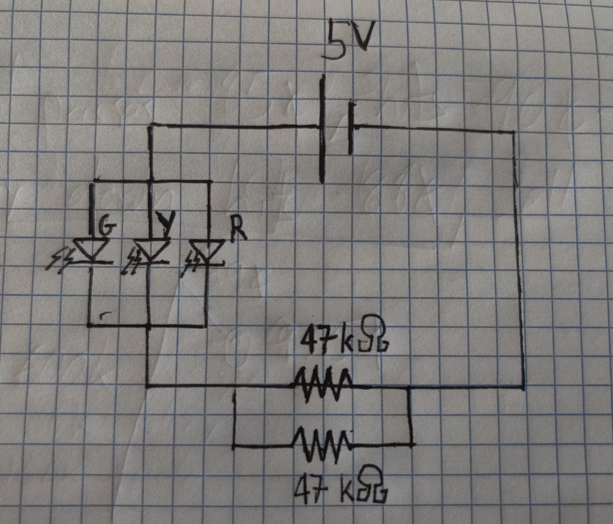
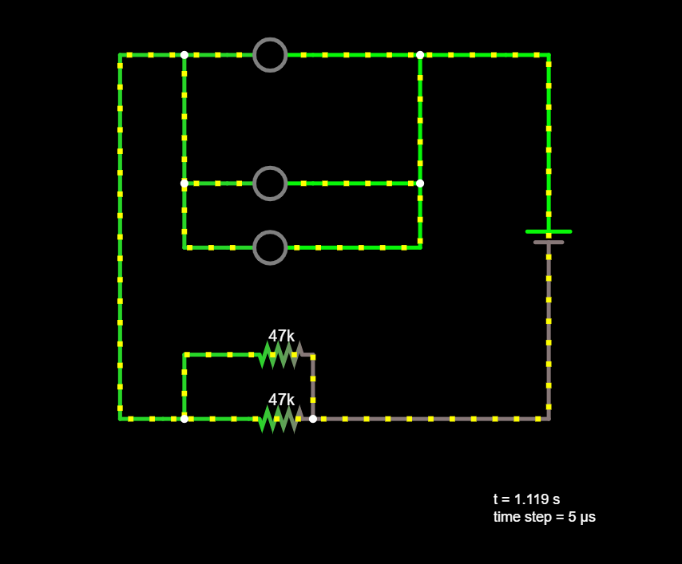
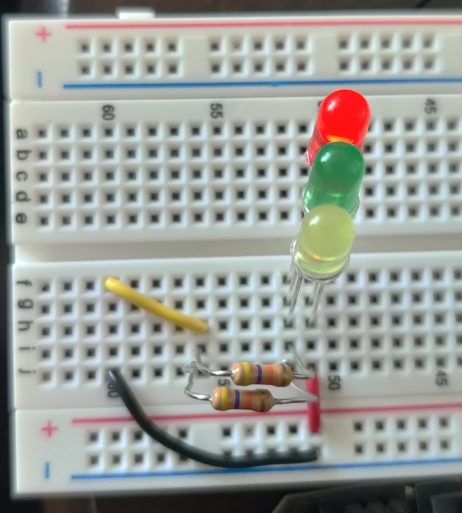
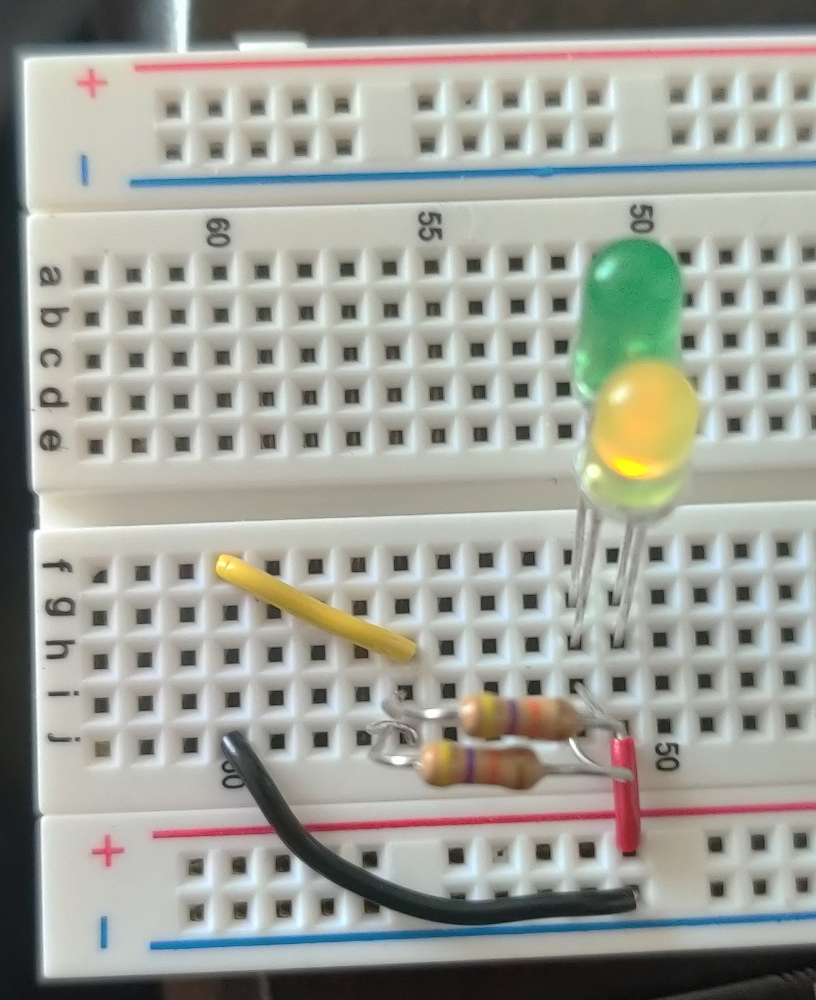
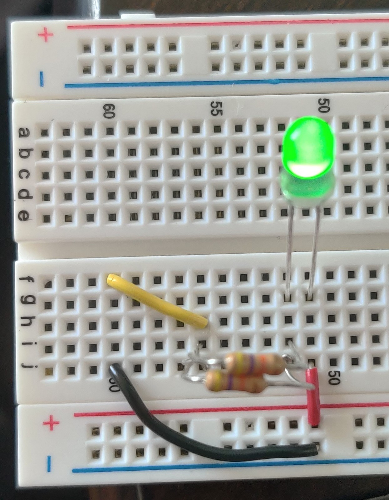
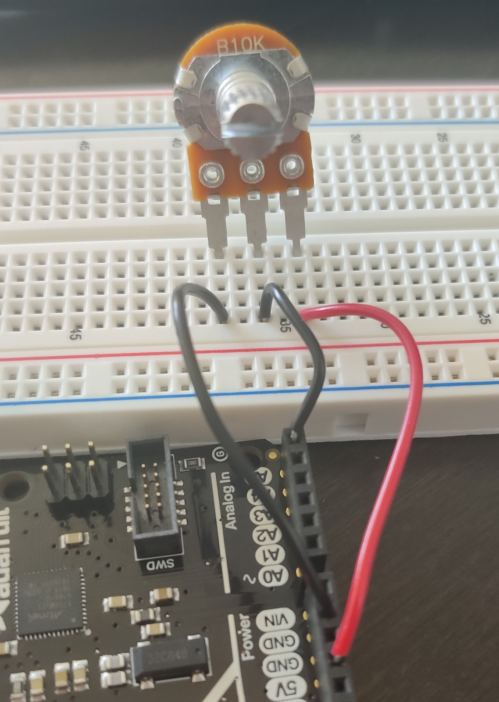

This week we designed some simple circuits and analyzed them. The circuit I built included 3 different colored LEDs in parallel, connected in series to two 47k Ohm resistors in parallel. The circuit is drawn and shown on the right.
Measuring the circuit around the resistors which are in parallel, we find that the voltage is 3.3 V. We can calculate the total resistance of the resistors in parallel using the parallel resistors formula (1/R_t = 1/R_1 + 1/R_2), and find that the total resistance is 23.5k Ohm. Using Ohm's law, we find that the current is I = V / R = 3.3 / 23.5k = 0.14 mA. When we measure the current of the circuit we get around 0.12 mA, which is close to our prediction, and within the margin of error of resistors.
When we simulate the circuit on falstad.com we see a slightly higher voltage drop across the resistors at 3.72 V and hence a higher current at 0.158 mA. We can see the simulated circuit on the left.
Interestingly, we see that only the red LED lights up, while the yellow LED is dull and the green one is off. If we run the circuit with just the yellow and green LED, then the yellow LED becomes brighter, and if we leave in only the green LED that one becomes bright. This makes sense, since red is the lowest energy light, and hence it hogs most of the current. After that the yellow is the lowest energy light, and last is green. From this it follows that a blue LED would require even more voltage drop and would be the last to turn on, and we see that this is in fact the case.



Now we tested analog in on the Metro board, and connected a 10k Ohm potentiometer to 5V, Ground, and an analog pin. Sweeping the potentiometer, we were able to see the reading of the pin go from 8 to 1023. For the last bit of range on the potentiometer the reading didn't change, indicating that the analog readout must be on a 3.3V scale, and so the last 1.7V from the 5V source is out of range. Circuit for the potentiometer circuit shown below.